Brief / 设计简介
让垃圾就地转化为肥料的智能循环单元
EcoTransit Rover 是一款智能化、环保型的移动垃圾处理车辆，它能够在大型园区、大学城或商业综合体中自由巡航，收集分散的厨余垃圾并现场完成粉碎、发酵与转化，生成可再利用的有机肥料。它不仅降低了人工运维成本，还实现了“就地资源化”的绿色闭环，兼具高效、可持续和未来感，是推动园区低碳发展的移动式微型工厂。
EcoTransit Rover is an intelligent and environmentally friendly mobile waste disposal vehicle. It can freely cruise in large parks, university towns or commercial complexes, collect scattered kitchen waste and complete on-site crushing, fermentation and transformation to generate reusable organic fertilizer. It not only reduces the cost of manual operation and maintenance, but also realizes a green closed loop of “local resource utilization”, combining efficiency, sustainability and a sense of the future. It is a mobile micro-factory that promotes the low-carbon development of the park.
项目属性 / Attributes
01 — 04- 智能化
- Smart
- 环保
- Eco-friendly
- 可持续
- Sustainable
- 教育性
- Educational
Background & Research / 背景与研究
让食物生产回到城市，让废弃物回到生态循环
城市农业与食物系统本地化
Background- 城市农业 · 屋顶农园
- 让“食物生产”重新进入城市日常，缩短了从田间到餐桌的距离。
- 社区支持农业（CSA）
- 更短的供应链和更新鲜的食材，更代表着一种绿色转型趋势。
- 食物系统本地化
- 园区与食堂的厨余垃圾也能就地回收、转化为肥料。
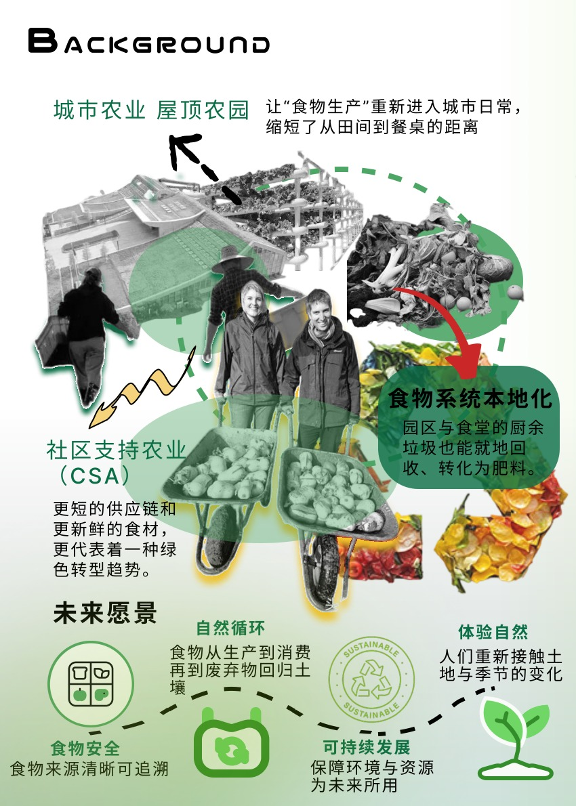
未来愿景 / Future Vision
Nature · Food · Future自然循环
食物从生产到消费，再到废弃物回归土壤。
体验自然
人们重新接触土地与季节的变化。
食物安全
食物来源清晰可追溯。
可持续发展
保障环境与资源为未来所用。
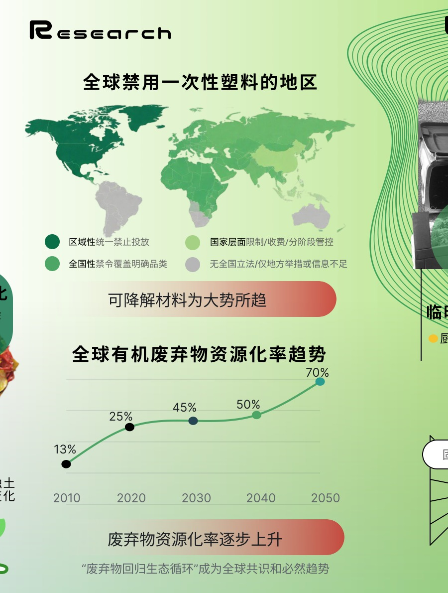
全球一次性塑料禁令与材料趋势
Global Context全球不同地区对一次性塑料采取不同层级的管控，可降解材料为大势所趋。
废弃物资源化率逐步上升，“废弃物回归生态循环”成为全球共识和必然趋势。
| 指标 | 2010 | 2020 | 2030 | 2040 | 2050 |
|---|---|---|---|---|---|
| 资源化率 | 13% | 25% | 45% | 50% | 70% |
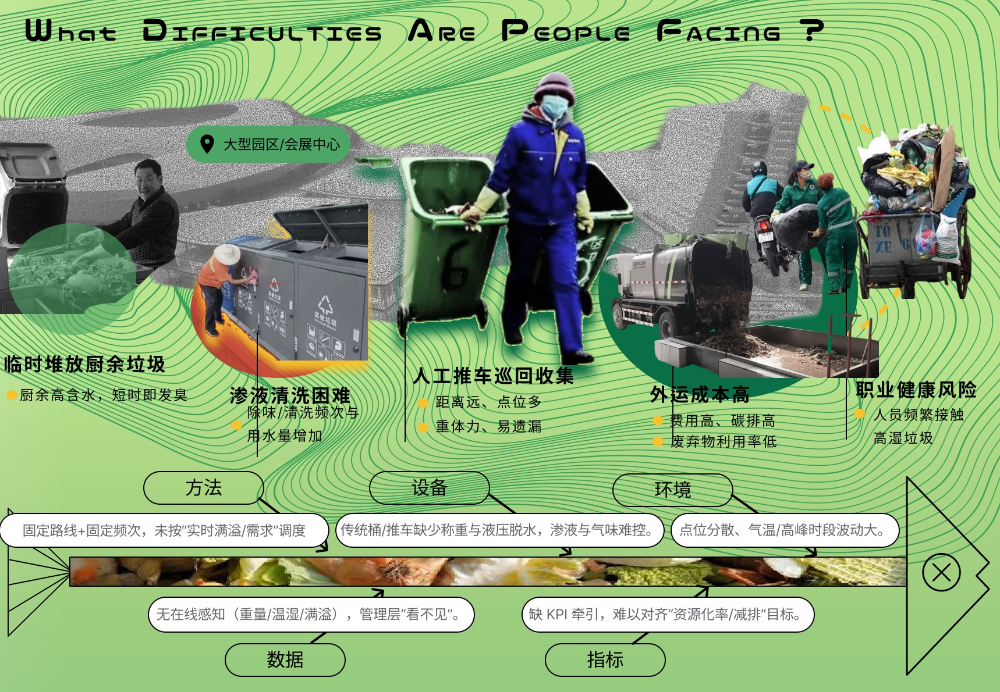
五类现场痛点 / Field Pain Points
大型园区 / 会展中心-
01
临时堆放厨余垃圾Temporary Storage
厨余高含水，短时即发臭。
-
02
渗液清洗困难Cleaning
除味、清洗频次与用水量增加。
-
03
人工推车巡回收集Manual Collection
距离远、点位多；重体力、易遗漏。
-
04
外运成本高External Transport
费用高、碳排高；废弃物利用率低。
-
05
职业健康风险Occupational Health
人员频繁接触高湿垃圾。
方法、设备、环境、数据与指标问题
System Gaps方法
固定路线 + 固定频次，未按“实时满溢 / 需求”调度。
设备
传统桶、推车缺少称重与液压脱水，渗液与气味难控。
环境
点位分散，气温、高峰时段波动大。
数据
无在线感知（重量、温湿、满溢），管理层“看不见”。
指标
缺 KPI 牵引，难以对齐“资源化率 / 减排”目标。
Product / 产品与核心特征
让垃圾就地转化为肥料的智能循环单元
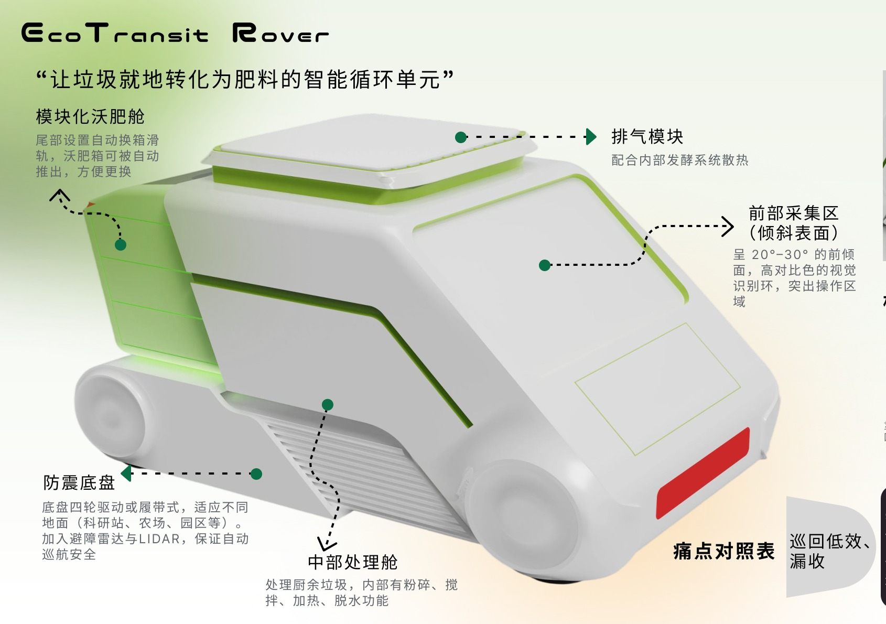
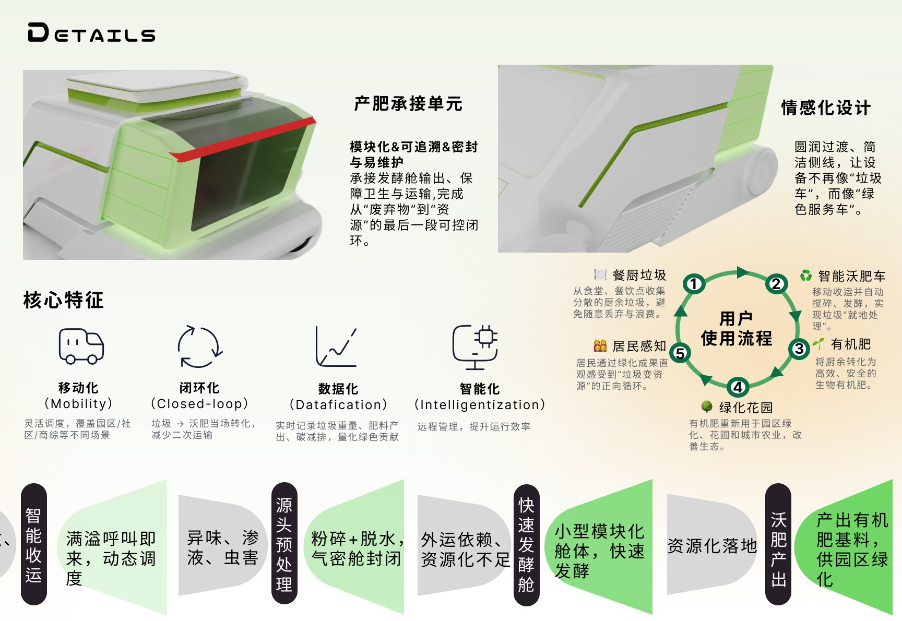
产品细节 / Product Details
Collection — Processing — Output模块化沃肥舱
尾部设置自动换箱滑轨，沃肥箱可被自动推出，方便更换。
排气模块
配合内部发酵系统散热。
前部采集区 · 倾斜表面
呈 20°–30° 的前倾面，以高对比色的视觉识别环突出操作区域。
防震底盘 + LIDAR
底盘采用四轮驱动或履带式，适应科研站、农场、园区等不同地面；加入避障雷达与 LIDAR，保证自动巡航安全。
中部处理舱
处理厨余垃圾，内部具有粉碎、搅拌、加热、脱水功能。
产肥承接单元
模块化、可追溯、密封与易维护；承接发酵舱输出，保障卫生与运输，完成从“废弃物”到“资源”的最后一段可控闭环。
情感化侧线
圆润过渡、简洁侧线，让设备不再像“垃圾车”，而像“绿色服务车”。
核心特征 / Four Features
01 — 04移动化
灵活调度，覆盖园区、社区、商综等不同场景。
闭环化
垃圾到沃肥当场转化，减少二次运输。
数据化
实时记录垃圾重量、肥料产出、碳减排，量化绿色贡献。
智能化
远程管理，提升运行效率。
用户使用流程 / Closed Loop
01 — 05- 01餐厨垃圾Kitchen Waste
从食堂、餐饮点收集分散的厨余垃圾，避免随意丢弃与浪费。
- 02智能沃肥车EcoTransit Rover
移动收运并自动搅碎、发酵，实现垃圾“就地处理”。
- 03有机肥Organic Fertilizer
将厨余转化为高效、安全的生物有机肥。
- 04绿化花园Green Landscape
有机肥重新用于园区绿化、花圃和城市农业，改善生态。
- 05居民感知Resident Perception
居民通过绿化成果直观感受到“垃圾变资源”的正向循环。
从痛点到处理策略
Pain Point → Strategy- 01智能收运巡回低效、漏收
满溢呼叫即来，动态调度。
- 02源头预处理异味、渗液、虫害
粉碎 + 脱水，气密舱封闭。
- 03快速发酵舱外运依赖、资源化不足
小型模块化舱体，快速发酵。
- 04沃肥产出资源化落地
产出有机肥基料，供园区绿化。
Persona & Service System / 人物与服务系统
居民、车辆、APP、管理员与园区协同运转
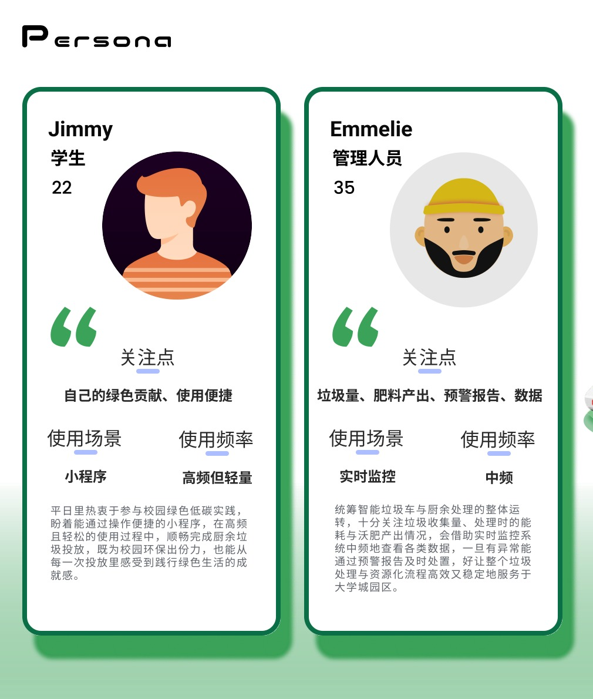
Jimmy · 学生 · 22
- 关注点
- 自己的绿色贡献、使用便捷。
- 使用场景
- 小程序。
- 使用频率
- 高频但轻量。
平日里热衷于参与校园绿色低碳实践，盼着能通过操作便捷的小程序，在高频且轻松的使用过程中，顺畅完成厨余垃圾投放，既为校园环保出份力，也能从每一次投放里感受到践行绿色生活的成就感。
Emmelie · 管理人员 · 35
- 关注点
- 垃圾量、肥料产出、预警报告、数据。
- 使用场景
- 实时监控。
- 使用频率
- 中频。
统筹智能垃圾车与厨余处理的整体运转，十分关注垃圾收集量、处理时的能耗与沃肥产出情况，会借助实时监控系统中频地查看各类数据，一旦有异常能通过预警报告及时处置，好让整个垃圾处理与资源化流程高效又稳定地服务于大学城园区。
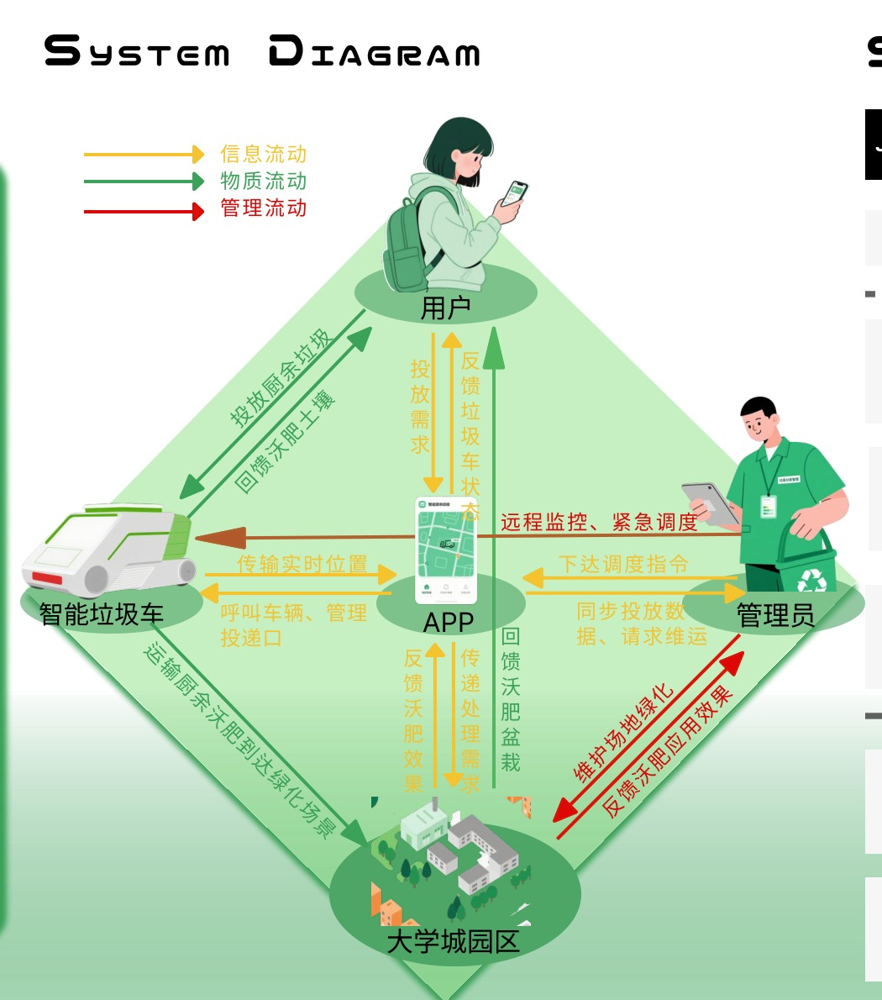
系统关系 / System Relationships
信息流动 · 物质流动 · 管理流动- 用户 ↔ 智能垃圾车
- 投放厨余垃圾；回馈沃肥土壤。
- 用户 ↔ APP
- 提交投放需求；接收垃圾车状态反馈。
- 智能垃圾车 ↔ APP
- 传输实时位置；通过 APP 呼叫车辆、管理投递口。
- 管理员 ↔ APP
- 下达调度指令；同步投放数据、请求维运。
- 管理员 ↔ 智能垃圾车
- 远程监控、紧急调度。
- APP ↔ 大学城园区
- 传递处理需求；反馈沃肥效果。
- 大学城园区 ↔ 用户
- 回馈沃肥盆栽。
- 智能垃圾车 ↔ 大学城园区
- 运输厨余、沃肥到达绿化场景。
- 管理员 ↔ 大学城园区
- 维护场地绿化；反馈沃肥应用效果。
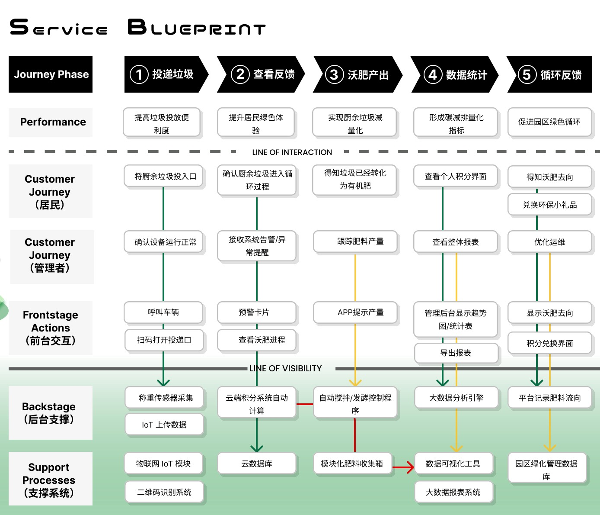
| 旅程层级 | 01 投递垃圾 | 02 查看反馈 | 03 沃肥产出 | 04 数据统计 | 05 循环反馈 |
|---|---|---|---|---|---|
| Performance | 提高垃圾投放便利度 | 提升居民绿色体验 | 实现厨余垃圾减量化 | 形成碳减排量化指标 | 促进园区绿色循环 |
| LINE OF INTERACTION / 互动线 | |||||
| Customer Journey 居民旅程 |
将厨余垃圾投入口 | 确认厨余垃圾进入循环过程 | 得知垃圾已经转化为有机肥 | 查看个人积分界面 |
|
| Customer Journey 管理者旅程 |
确认设备运行正常 | 接收系统告警 / 异常提醒 | 跟踪肥料产量 | 查看整体报表 | 优化运维 |
| Frontstage Actions 前台交互 |
|
|
APP 提示产量 |
|
|
| LINE OF VISIBILITY / 可见线 | |||||
| Backstage 后台支撑 |
|
云端积分系统自动计算 | 自动搅拌 / 发酵控制程序 | 大数据分析引擎 | 平台记录肥料流向 |
| Support Processes 支撑系统 |
|
云数据库 | 模块化肥料收集箱 |
|
园区绿化管理数据库 |
App Interaction / APP 交互
居民端与管理端共同完成投放、处理与运维闭环
居民端 · 01—06
Resident App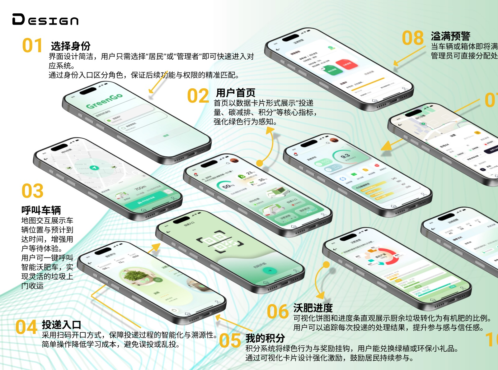
选择身份
界面设计简洁，用户只需选择“居民”或“管理者”即可快速进入对应系统。
通过身份入口区分角色，保证后续功能与权限的精准匹配。
用户首页
首页以数据卡片形式展示“投递量、碳减排、积分”等核心指标，强化绿色行为感知。
呼叫车辆
地图交互展示车辆位置与预计到达时间，增强用户等待体验。
用户可一键呼叫智能沃肥车，实现灵活的垃圾上门收运。
投递入口
采用扫码开口方式，保障投递过程的智能化与溯源性。
简单操作降低学习成本，避免误投或乱投。
我的积分
积分系统将绿色行为与奖励挂钩，用户能兑换绿植或环保小礼品。
通过可视化卡片设计强化激励，鼓励居民持续参与。
沃肥进度
可视化饼图和进度条直观展示厨余垃圾转化为有机肥的比例。
用户可以追踪每次投递的处理结果，提升参与感与信任感。
管理端 · 07—11
Administrator App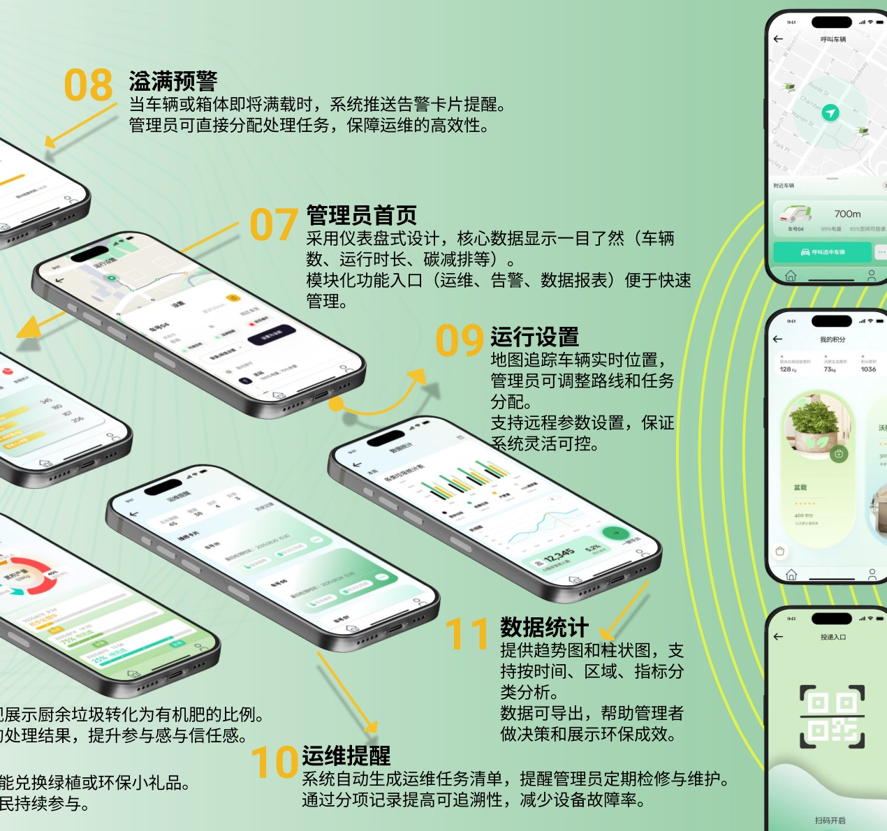
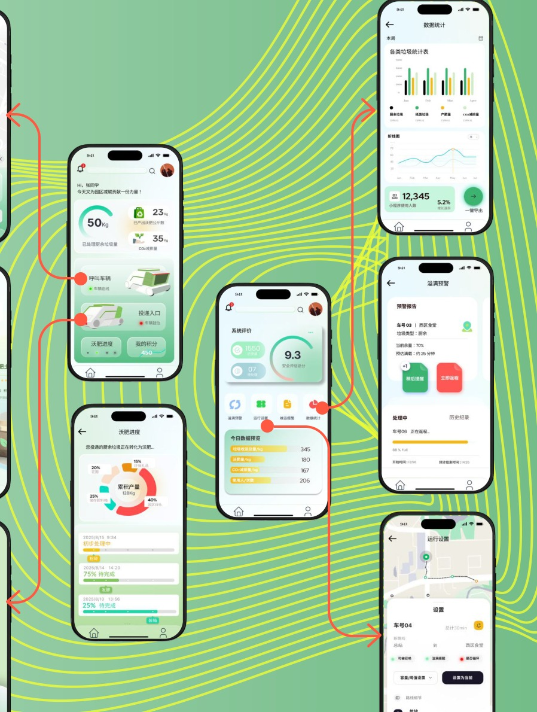
管理员首页
采用仪表盘式设计，核心数据显示一目了然（车辆数、运行时长、碳减排等）。
模块化功能入口（运维、告警、数据报表）便于快速管理。
溢满预警
当车辆或箱体即将满载时，系统推送告警卡片提醒。
管理员可直接分配处理任务，保障运维的高效性。
运行设置
地图追踪车辆实时位置，管理员可调整路线和任务分配。
支持远程参数设置，保证系统灵活可控。
运维提醒
系统自动生成运维任务清单，提醒管理员定期检修与维护。
通过分项记录提高可追溯性，减少设备故障率。
数据统计
提供趋势图和柱状图，支持按时间、区域、指标分类分析。
数据可导出，帮助管理者做决策和展示环保成效。
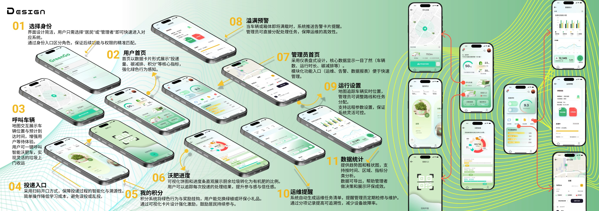
Archive / 原始展板
PDF 第 7—11 页完整记录
五张原始展板按 PDF 页序呈现，点击可放大查看原始排版与全部细节标注。
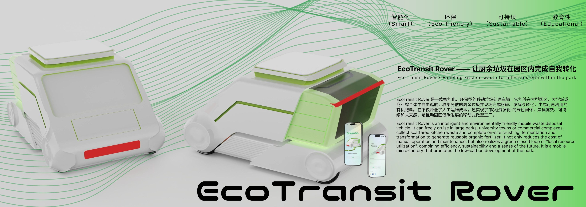
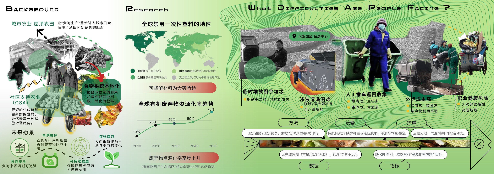
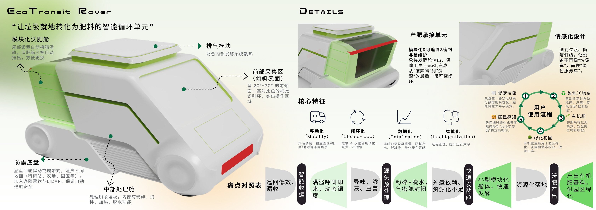
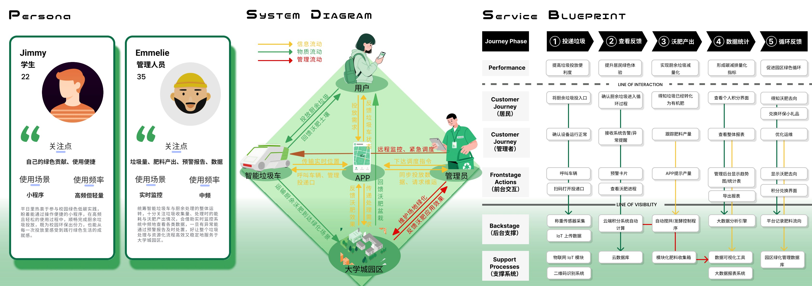